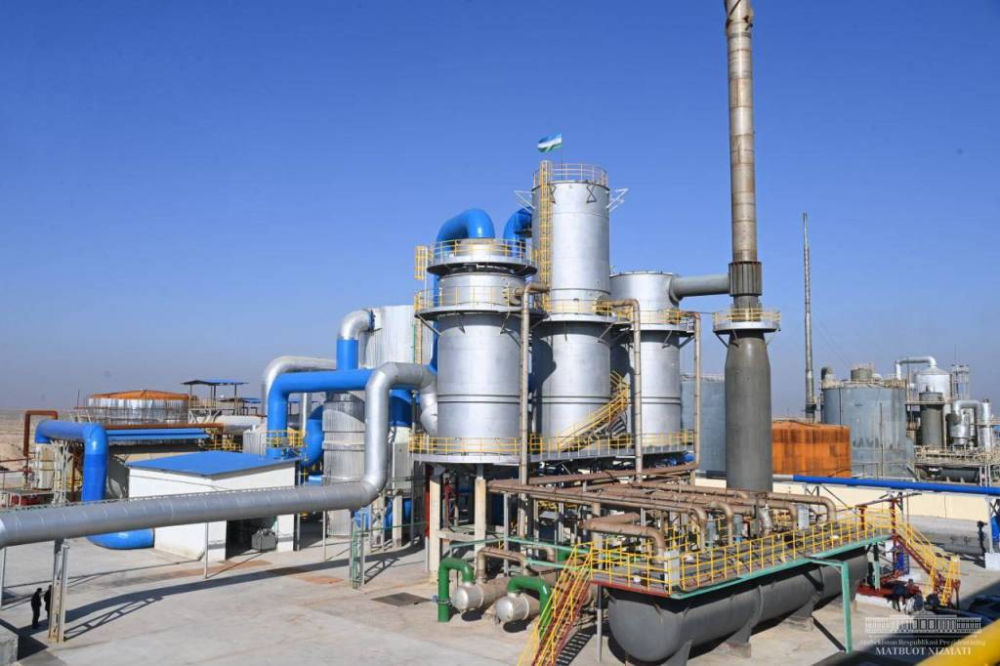

Kimyoviy texnologiya va nanotexnologiya

Bugungi kunda muhim ishlab chiqarish, xomashyo va ilmiy-texnikaviy
salohiyatga ega boʻ lgan Oʻzbekiston kimyo sanoati Oʻzbekiston
iqtisodiyotining yetakchi tarmoqlaridan biri hisoblanadi. Bu
respublika iqtisodiyoti va eksport salohiyatining rivojlanishiga
katta hissa qoʻshadi. Respublika va Markaziy Osiyo mintaqasining
iqtisodiyotida strategik ahamiyatga ega bo‘lgan kimyo sanoati
mustahkam ishlab chiqarish va texnik bazaga ega bo‘lib, kelajakda
uzoq muddatli rivojlanish uchun barcha zarur shart-sharoitlarga ega
– tabiiy gaz, gaz kondensati, oltingugurt, fosforit, silvinit,
natriy xloridning katta konlari, ohaktosh kabilar.
Oʻzbekiston Respublikasi kimyo sanoati uzoq rivojlanish tarixiga
ega. Birinchi kimyoviy korxonalar XX asrning 30-yillari boshlarida
yaratilgan. Mamlakatning qishloq xoʻjaligidagi mineral oʻgʻitlar va
pestitsidlarga boʻlgan talabini hisobga olgan holda, Oʻzbekiston
Respublikasi hududida bir qator yirik kimyoviy korxonalar barpo
etildi, ular keyinchalik Markaziy Osiyodagi eng kuchli kimyoviy
majmualarni yaratishda mustahkam poydevor boʻldi.
Kompaniyaning mavjud tuzilmasi respublikada kimyo sanoatini
rivojlantirish boʻyicha ilmiy tadqiqotlar oʻtkazish, kimyoviy
mahsulotlar ishlab chiqarish, mahsulotlarni tarqatish va yakuniy
iste`molchilarga yetkazib berish kabi kompleks siyosatni olib borish
uchun imkoniyat yaratadi. Kompaniya korxonalarining ishlab chiqarish
quvvati Oʻzbekistonning kimyoviy mahsulotlarga boʻlgan ichki
ehtiyojini toʻliq qondirish, shuningdek ularni doimiy ravishda
eksport qilish imkonini beradi. Kompaniya korxonalarini ishlab
chiqarilgan mahsulot turiga koʻra toʻrtta asosiy ishlab chiqarish
majmualariga boʻlish mumkin:
mineral oʻgʻitlar va noorganik moddalar ishlab chiqarish
majmuasi;
organik kimyo, sun`iy tolalar va polimer materiallar ishlab
chiqarish majmuasi;
energetika, oltin qazib olish, kimyo sanoati uchun kimyoviy
reagentlar ishlab chiqarish majmuasi;
oʻsimliklarni himoya qiluvchi kimyoviy moddalar ishlab chiqarish.
Azot va fosforli oʻgʻitlar, sirka kislotasi, natriy xlorat, natriy
sianid va nitrat kislota va boshqalar kabi kimyoviy mahsulotlar
ichki bozor va qisman Markaziy Osiyo mintaqasining qoʻshni
mamlakatlari bozorlarining ehtiyojlarini qoplaydi. Ishlab
chiqarilgan mineral azot va fosforli oʻgʻitlarning hajmi va turlari
boʻyicha “Oʻzkimyosanoat” Markaziy Osiyoda ammiak, karbamid, ammiak
selitrasi, ammoniy sulfati, ammofos, superfosfat va nitrofosning
yirik ishlab chiqaruvchisi boʻlib, mintaqada yetakchi oʻrinni
egallaydi.
Respublikaning Zarafshon viloyatida bir nechta yirik kimyo
korxonalari mavjud:
“Navoiyazot” OAJ kaustik soda, xlor va xlor mahsulotlari, oltin
qazib olish sanoati uchun kimyoviy reagentlar, poliakrilamid,
metanol, poliakrilon va itil tolasini ishlab chiqaradi. Fransiya
kompaniyasining loyihasiga koʻra 2002-yilda ishga tushirilgan
xlor-magniy defoliant va natriy xlorat ishlab chiqarish yuqori
sifatli mahsulot ishlab chiqarishni ta`minlaydi. “Samarqandkimyo”
OAJda “Oʻzkimyosanoat” davlat aksiyadorlik kompaniyasi
mutaxassislari Oʻzbekiston Respublikasi Fanlar Akademiyasi olimlari
bilan birgalikda mineral oʻgʻitning yangi turi – nitro-kalsiy
fosforli oʻgʻit (nitrofosning analogi) chiqarilishi bilan Jeroy
fosforitlarini qayta ishlash texnologiyasini ishlab chiqdilar va
joriy qildilar. NKFU ishlab chiqarish texnologiyasi fosforitlarning
nitrat kislota parchalanishiga asoslangan va mavjud sanoat bilan
taqqoslaganda ekologik jihatdan yuqori.
“Elektrokimyo zavodш” OAJ QK respublikaning qishloq xoʻjaligi uchun
yuqori sifatli samarali pestitsidlarni ishlab chiqaradi. Ayni paytda
Kompaniya faol investitsiya siyosatini olib bormoqda. Ammiak ishlab
chiqarish boʻyicha yirik quvvatlarni modernizatsiyalash va
rekonstruksiya qilish boʻyicha mahalliy va xorijiy muhandislik
kompaniyalarining soʻnggi ishlanmalaridan foydalangan holda
tashkiliy choralar koʻrilmoqda, maqsadi energiya tejash bilan yuqori
samaradorlikni ta`minlashdir. Oʻzbekiston kimyo sanoati jadal
rivojlanayotgan sohadir, 2006-yil yakunlariga koʻra, sanoat ishlab
chiqarishining oʻsishi 2005-yilga nisbatan 114,8% ni tashkil etdi,
mahsulot eksporti 129,0% ga oʻsdi. Soʻnggi yillarda “Oʻzkimyosanoat”
korxonalari Osiyoning Xitoy, Eron, Turkiya va Afgʻoniston, Sharqiy
Yevropa va Boltiqboʻyi mamlakatlari kabi yirik bozorlariga chiqish
uchun katta ishlarni amalga oshirdi.
“Oʻzkimyosanoat” tarkibiga kiruvchi korxonalarni yanada
rivojlantirish maqsadida kimyo majmuasini 2010-yilgacha
rivojlantirish dasturi ishlab chiqilgan boʻlib, unga quyidagilar
kiradi:
mineral oʻgʻitlar ishlab chiqarishni modernizatsiya qilish va
texnologik qayta jihozlash; bozor talablariga muvofiq ishlab
chiqarilgan kimyoviy mahsulot turlarini optimallashtirish; eskirgan
ob`ektlarni bosqichma-bosqich olib qoʻyish bilan zamonaviy
ob`ektlarni qurish; ichki va tashqi bozor uchun yangi, bilim talab
qiladigan kimyoviy mahsulotlar ishlab chiqarishni tashkil etish.
Rivojlanish dasturi doirasida bir qator istiqbolli investitsiya
loyihalarini oʻz ichiga olgan investitsiya dasturi ishlab chiqilgan
boʻlib, ularni amalga oshirish kelajakda Oʻzbekistonda kimyo
taraqqiyotining yangi bosqichini ta`minlaydi.
Tarkibiy oʻzgarishlarni amalga oshirish, kimyo sanoatini
modernizatsiya qilish va diversifikatsiya qilish, boy mineral-xom
ashyo zaxiralarini chuqur qayta ishlashni ta`minlash, eksportga
yoʻnaltirilgan tayyor kimyoviy mahsulotlar hajmi va turlarini
kengaytirish va shu maqsadda xorijiy investitsiyalarni keng jalb
qilish uchun 2021-yilgacha kimyo sanoatini rivojlantirish dasturi
ishlab chiqilgan. Kimyo sanoatini modernizatsiya qilish va texnik
yangilash, zamonaviy innovatsion texnologiyalarni joriy etish va
zamonaviy energiya va resurslarni tejaydigan texnologiyalarga
asoslangan yangi ishlab chiqarishlarni yaratish boʻyicha
chora-tadbirlarning amalga oshirilishi Oʻzbekistonning jahon
bozoridagi raqobatbardoshligini ta`minlaydigan yangi hududlarga
kirishiga kuchli turtki beradi.
Dasturni amalga oshirish natijasida 20 dan ortiq yangi turdagi
mahsulotlar – polivinilxlorid, shinalar, konveyer lentalari, qishloq
xoʻjaligi shinalari, uglerod, kaliy sulfat, kaliy gidroksidi va
boshqalarni ishlab chiqarish tashkil etiladi, bu esa ishlab
chiqarilayotgan mahsulotlarning diversifikatsiyasini ta’minlaydi.
Xususan, 2021-yilga kelib nooziq-ovqat mahsulotlar ulushi 24 foizdan
44 foizgacha, 2022-yildan esa 50 foizdan oshadi.
Kimyoviy texnologiyaning kelajagi ekologik toza mineral oʻgʻitlar
ishlab chiqarish yoki boshqacha qilib aytganda, tabiatning ekologik
muvozanatiga minimal ta`sir koʻrsatadigan yoʻl tutishdan iborat
boʻlib, bu oʻz navbatida, insoniyat uchun xavfsiz oziq-ovqat
omborini kengaytirishni ragʻbatlantiradi.
Mamlakatimizning yetakchi tarmoqlaridan biri boʻlgan kimyo sanoati
iqtisodiyotning rivojlanishiga va uning eksport salohiyatiga katta
hissa qoʻshadi, kimyoviy mahsulotlarga boʻlgan ichki ehtiyojni
toʻliq qondiradi, shuningdek, tashqi bozorga yetkazib berishni
dinamik ravishda oshiradi.
Konferensiya tashkilotchilari
-

Oliy ta’lim, fan va innovatsiyalar
vazirligi -

Tog‘-kon sanoati va geologiya
vazirligi -

O‘zbekiston Respublikasi fanlar
akademiyasi -

“Navoiy kon-metallurgiya kombinati”
AJ -

“Navoiyuran”
Davlat korxonasi -

Navoiy davlat konchilik va texnologiyalar universiteti